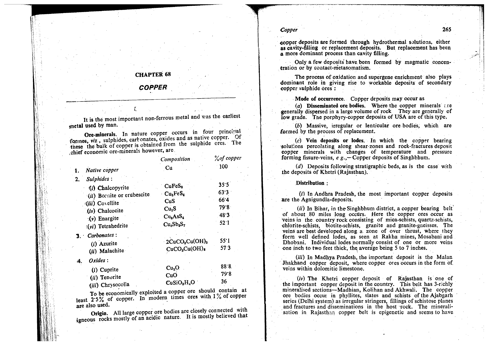

The rock name Charnockite holds a historic and honored position in Indian and international petrology. It was introduced in 1893 and comprehensively established in 1900 by Sir Thomas H. Holland, Director of the Geological Survey of India (GSI).
Holland named the rock in memory of Job Charnock, the founder of modern Kolkata (Calcutta). In 1892, Holland discovered that Job Charnock's monumental tombstone in St. John's Churchyard, Kolkata (erected in 1695), was carved from a distinctive, dark, greasy, hypersthene-bearing granitic rock that had been quarried and transported from St. Thomas Mount at Pallavaram, near Chennai (Madras), Tamil Nadu.

According to both Holland's classical definition and the modern IUGS Subcommission on the Systematics of Metamorphic/Igneous Rocks:
Sir Thomas Holland recognized that charnockites do not occur in isolation but form a complete, cogenetic consanguineous differentiation suite spanning from acid to ultrabasic compositions, all unified by the constant presence of orthopyroxene (hypersthene):
While Holland originally interpreted charnockites as an igneous plutonic suite, modern petrology conclusively proves that they are high-grade regional metamorphic rocks formed under Granulite Facies conditions ($T \approx 750\text{--}900^\circ\text{C}$, $P \approx 6\text{--}10\text{ kbar}$, depths of $20\text{--}35\text{ km}$ in the lower continental crust).
At granulite facies temperatures, hydrous phyllosilicates (biotite and hornblende) become thermodynamically unstable in the presence of quartz and undergo vapor-absent dehydration melting or breakdown, forming anhydrous orthopyroxene:
In a landmark paper, Janardhan, Newton & Smith (1979) documented the genesis of "incipient charnockite" at Kabbaldurga quarry in the Dharwar Craton. Foliated, grey amphibolite-facies Peninsular Gneiss containing biotite and hornblende is transformed along fracture-controlled patches and veins into coarse, unfoliated, greasy dark charnockite.
Fluid inclusion studies confirmed that this dehydration was driven by an active influx of mantle-derived, juvenile, high-density $CO_2$-rich fluids. The massive influx of $CO_2$ flushed out water, reducing the water activity ($a_{H_2O} < 0.35$). Because $a_{H_2O}$ was depressed, the biotite dehydration curve was drawn down to lower temperatures, precipitating hypersthene + K-feldspar + quartz in situ.
This is the exact, canonical definition established by Sir Thomas Holland (1900) and maintained in all international metamorphic and igneous classifications (Winter, 2014, p. 468; Mahapatra, p. 140). The defining diagnostic mineral that separates charnockite from all ordinary granites is the orthopyroxene hypersthene, coexisting with potassium feldspar (perthite) and quartz under high-grade granulite facies conditions.
An assemblage of hornblende + K-feldspar + quartz represents an ordinary hornblende granite or amphibolite-facies granitic gneiss. It lacks the defining orthopyroxene (hypersthene). In fact, charnockite forms when hornblende breaks down and dehydrates into hypersthene.
This aluminous, pelitic granulite assemblage is diagnostic of Khondalite (a quartz-manganese-garnet-sillimanite schist/gneiss named after the Khond tribes of Odisha and Eastern Ghats), or a metapelitic restite. It represents a metamorphosed aluminous clay/shale, not the quartzofeldspathic hypersthene rock charnockite.
This hydrous, low-to-medium grade assemblage is characteristic of greenschist or epidote-amphibolite facies metabasites and epidote tonalites. Epidote is completely unstable at granulite facies temperatures and pressures, breaking down at $T > 550\text{--}650^\circ\text{C}$ long before charnockite forms.
| Division / Rock Name | Igneous Equivalent | $\text{SiO}_2\text{ (wt\%)}$ | Essential Mineral Assemblage | Diagnostic Features |
|---|---|---|---|---|
| Acid: Charnockite (sensu stricto) | Hypersthene Granite | $> 70\%$ | Hypersthene + K-Feldspar (Perthite) + Quartz $\pm$ Oligoclase | Greasy dark brownish-green luster; high silica; granoblastic |
| Acid-Intermediate: Enderbite | Hypersthene Tonalite | $65\text{--}70\%$ | Hypersthene + Plagioclase (Antiperthite) + Quartz ($Plag \gg Kfs$) | Sodic, plagioclase-dominated; low K-feldspar |
| Intermediate: Mangerite / Jotunite | Hypersthene Monzonite / Monzodiorite | $55\text{--}65\%$ | Hypersthene + Plagioclase + K-Feldspar + Clinopyroxene $\pm$ Quartz | Mesocratic; roughly equal plagioclase and alkali feldspar |
| Basic: Basic Charnockite (Norite) | Hypersthene Gabbro (Two-Pyroxene Granulite) | $48\text{--}55\%$ | Hypersthene + Clinopyroxene (Augite) + Calcic Plagioclase $\pm$ Garnet | Melanocratic; dark grey-black; anhydrous mafic granulite |
| Ultrabasic: Bahite (Pyroxenite) | Orthopyroxenite | $< 45\%$ | Hypersthene + Diopside + Hornblende + Magnetite (Feldspar-free) | Ultramafic; dense; dark green-black |
Write the balanced chemical reaction for the breakdown of pure phlogopite biotite in the presence of quartz to form enstatite and K-feldspar. Given standard free energies of formation ($\Delta G^\circ_f$): Phlogopite = $-5,835\text{ kJ/mol}$, Quartz = $-856.3\text{ kJ/mol}$, Enstatite = $-1,460.8\text{ kJ/mol}$, K-feldspar = $-3,742.9\text{ kJ/mol}$, and $H_2O\text{ (steam)} = -228.6\text{ kJ/mol}$. Calculate the standard Gibbs free energy of the reaction ($\Delta G^\circ_{\text{rxn}}$) at 298.15 K.
The equilibrium constant for the biotite dehydration reaction is given by $\ln K = -\frac{\Delta G^\circ}{RT}$. If the solid phases are pure minerals ($a_{\text{solids}} = 1$), express the equilibrium temperature ($T_{\text{eq}}$) as a function of water activity ($a_{H_2O}$). Explain why $CO_2$ flushing induces "incipient charnockite" formation at Kabbaldurga.
State the diagnostic optical properties of hypersthene under the petrographic microscope, including its axial character, extinction angle, and characteristic pleochroic colors along its three vibration axes ($\alpha$, $\beta$, $\gamma$).
A granulite facies rock contains $25\%$ quartz, $15\%$ hypersthene, $55\%$ antiperthitic plagioclase ($\text{An}_{32}$), and only $5\%$ microcline. Classify this rock into Holland's terminology and modern IUGS nomenclature.
Why do acid charnockites ($SiO_2 > 70\%$) appear dark olive-green or greasy dark brown in hand specimen, whereas common calc-alkaline granites of identical silica content appear light pink, white, or light grey?
In the Eastern Ghats Mobile Belt (EGMB) of Odisha and Andhra Pradesh, charnockites are intimately intercalated with khondalites. Contrast the protoliths and metamorphic environments of these two iconic Indian rock types.
In garnet-bearing charnockites, the exchange of iron and magnesium between garnet and hypersthene: $$\frac{1}{3}\text{Mg}_3\text{Al}_2\text{Si}_3\text{O}_{12}\ (\text{Pyrope}) + \text{FeSiO}_3\ (\text{Ferrosilite}) \rightleftharpoons \frac{1}{3}\text{Fe}_3\text{Al}_2\text{Si}_3\text{O}_{12}\ (\text{Almandine}) + \text{MgSiO}_3\ (\text{Enstatite})$$ is used as a geothermometer (Harley, 1984). If the distribution coefficient is $K_D = \frac{(Fe/Mg)_{\text{grt}}}{(Fe/Mg)_{\text{opx}}} = 3.25$, explain how $K_D$ responds to increasing metamorphic temperature.
During exhumation and hydration of a charnockite terrain, hypersthene is often partially replaced along cracks and margins by green amphibole (hornblende) and secondary biotite. Name this texture and write the general hydration reaction.